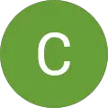
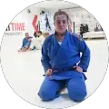
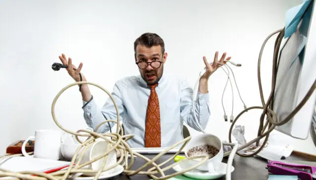

Paleta de cores
Medida no navegador: fundos ponderados pela área ocupada, textos pela quantidade de caracteres. Destaques reúnem cores saturadas e fundos de botão.
Fundos
#FFFFFF
Fundo · 55.5%
rgb(255, 255, 255)
rgb(255, 255, 255)
#10132D
Fundo · 24.6%
rgb(16, 19, 45)
rgb(16, 19, 45)
#0A0A0A
Fundo · 9.1%
rgb(10, 10, 10)
rgb(10, 10, 10)
#B7B7B7
Fundo · 6.7%
rgb(183, 183, 183)
rgb(183, 183, 183)
#F1F1F1
Fundo · 2.1%
rgb(241, 241, 241)
rgb(241, 241, 241)
#42548C
Fundo · 1.4%
rgb(66, 84, 140)
rgb(66, 84, 140)
#0D255A
Fundo · 0.4%
rgb(13, 37, 90)
rgb(13, 37, 90)
Textos
#FFFFFF
Texto · 52.7%
rgb(255, 255, 255)
rgb(255, 255, 255)
#000000
Texto · 21.8%
rgb(0, 0, 0)
rgb(0, 0, 0)
#272727
Texto · 10.8%
rgb(39, 39, 39)
rgb(39, 39, 39)
#5F6567
Texto · 13.7%
rgb(95, 101, 103)
rgb(95, 101, 103)
#161616
Texto · 0.8%
rgb(22, 22, 22)
rgb(22, 22, 22)
#2F2F2F
Texto · 0.1%
rgb(47, 47, 47)
rgb(47, 47, 47)
Destaques
#FFFFFF
Destaque
rgb(255, 255, 255)
rgb(255, 255, 255)
#42548C
Destaque
rgb(66, 84, 140)
rgb(66, 84, 140)
Gradientes
linear-gradient(0deg, rgba(0, 0, 0, 0.7) 0%, rgba(0, 0, 0, 0) 100%)Tipografia
Open Sans · Aa Bb Cc 0123
43% do texto · Se a sua cabeça não desliga, esta página é para você.Trustindex Open Sans · Aa Bb Cc 0123
13% do texto · Se a sua cabeça não desliga, esta página é para você.Geologica · Aa Bb Cc 0123
10% do texto · Se a sua cabeça não desliga, esta página é para você.Escala usada (desktop 1440px)
| Tamanho | Peso | Família | Amostra |
|---|---|---|---|
| 70px | 500 | Geologica | Texto de exemplo |
| 42px | 300 | Geologica | Texto de exemplo |
| 42px | 400 | Geologica | Texto de exemplo |
| 28px | 400 | Open Sans | Texto de exemplo |
| 26px | 400 | Open Sans | Texto de exemplo |
| 24px | 700 | Geologica | Texto de exemplo |
| 22px | 600 | Open Sans | Texto de exemplo |
| 22px | 300 | Open Sans | Texto de exemplo |
| 19px | 300 | Geologica | Texto de exemplo |
| 18px | 600 | Open Sans | Texto de exemplo |
Mobile (390px): 34px/400, 28px/500, 26px/400, 24px/700, 22px/300, 22px/600, 22px/400, 19px/300 · H1 no mobile: 28px
Tags
| Tag | Família | Tamanho | Peso | Altura de linha | Espaçamento | Caixa | Cor |
|---|---|---|---|---|---|---|---|
| <h1> | Geologica | 70px | 500 | 75px | -2px | none | #FFFFFF |
| <h2> | Open Sans | 16px | 400 | 20.8px | -1px | none | #161616 |
| <h3> | Geologica | 13px | 400 | 13px | 0.2px | none | #CCCCCC |
| <p> | Helvetica | 14.4px | 400 | 22.4px | normal | none | #FFFFFFD8 |
Botões
Recriados com os estilos computados reais. Efeitos de hover e animação não aparecem aqui; veja a seção de animações.
CONTATO
fundo #02010100 · texto #FFFFFF · raio 10px · padding 15px 30px · 14px/600 none · 1x na páginaSaiba mais
fundo #02010100 · texto #161616 · raio 6px · padding 16.5px 32px · 14px/600 none · 1x na páginaSaiba mais
fundo #FFFFFF · texto #2F2F2F · raio 6px · padding 16.5px 32px · 14px/600 none · 1x na páginaSaiba mais
fundo #FFFFFF · texto #161616 · raio 6px · padding 16.5px 32px · 14px/600 none · 1x na páginaCards e containers
Card (12x)
Advogado Criminalista em Venda Nova
raio 10px · sombra none · borda 0px none rgb(95, 101, 103) · 256x113pxCard (12x)
QUAIS SÃO OS CRIMES IMPRESCRITIVEIS E INAFIANÇÁVEIS? No vasto e complexo universo do Direi
raio 4px · sombra rgba(82, 71, 175, 0.09) 0px 20px 55px 0px · borda 0px none rgb(95, 101, 103) · 305x367pxCard (10x)
Sheila Mara Souza 2024-01-31 Fiquei super satisfeita com o atendimento. Surpreendeu a minh
raio 4px · sombra none · borda 2px solid rgb(255, 255, 255) · 294x234pxBordas, raios e sombras
4px
10px
30px
80px
10%
6px
Sombras
rgba(82, 71, 175, 0.09) 0px 20px 55px 0pxrgba(0, 0, 0, 0.1) 0px 0px 50px 0pxEspaçamentos
- Largura do conteúdo mais comum: 1280px
- Padding vertical das seções (topo/base): 0px/0px (11x)
- Gaps mais usados (flex/grid): 20px, 10px, 20px 40px, 30px, 40px 100px, 80px
- Altura total da página: 6879px em 11 seções
Estrutura e ritmo de cores das seções
Cada faixa é uma seção de topo, com altura proporcional e a cor ou imagem de fundo real.
1. hero WhatsApp (31) 985643310 41px · padding 0px/0px
2. 94px · padding 0px/0px
3. sobre Advogado criminalista especialista em direito criminal em BH 1041px · padding 0px/0px
4. servicos Áreas de atuação 2041px · padding 0px/0px
5. diferenciais Diferenciais escritório de advocacia criminal BH 335px · padding 0px/0px
6. sobre Dr. Ademar - Advogado Criminalista BH 784px · padding 0px/0px
7. 10px · padding 0px/0px
8. sobre Advogado criminalista especialista em BH 2064px · padding 0px/0px
9. sobre Advogado criminalista 24 Horas em BH, em atualização constan 165px · padding 0px/0px
10. sobre Sobre 388px · padding 0px/0px
11. rodape 52px · padding 0px/0px
Animações, ícones e bibliotecas
- Keyframes próprios: brilho, btnHoverTxtLiquidX, btnHoverTxtLiquidXAlt, btnHoverTxtLiquidY, btnHoverTxtLiquidYAlt, btnIconRipple, btnTxtMarqueeX, btnTxtMarqueeY, cd-bounce-in, dotAnimations, fadeIn, formRotate360, fr-thumbnail-spin, fresco-12, iconRipple, lqd-spinner-classical, lqd-spinner-dash, lqd-spinner-rotate, lqd-wrap-sliding-in, lqdBackToTopArrow, lqdFIFloatOne, lqdItiImgIn, lqdItiImgOut, lqdItiInnerIn, lqdItiInnerOut, lqdKeywordSlideIn, lqdKeywordSlideOut, lqdMegamenuSlideIn, lqdMegamenuSlideOut, lqdMegamenuSlideReveal, lqdPBRotate, lqdSnickersBarIn, lqdSnickersBarOut, lqdStackArrowNext, lqdStackArrowPrev, lqdStackNumberActive, lqdStackNumberActiveUp, lqdStackNumberPassed, lqdStackNumberPassedUp
- Animações de entrada do Elementor: nenhuma
- Classes de scroll reveal da casa: nenhuma
- Ícones: 2 SVG, 28 ícones de fonte
- Bibliotecas e tags detectadas: ga4, gsap, gtm, jquery, lottie, swiper
Snippets da biblioteca presentes nesta página
- Nenhum snippet da biblioteca identificado.
Imagens do site


